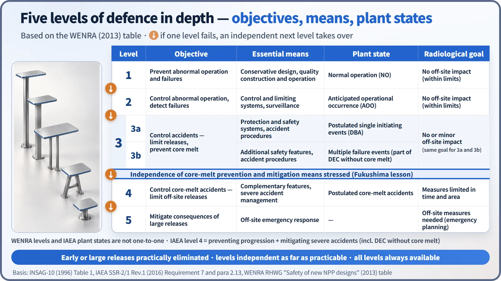
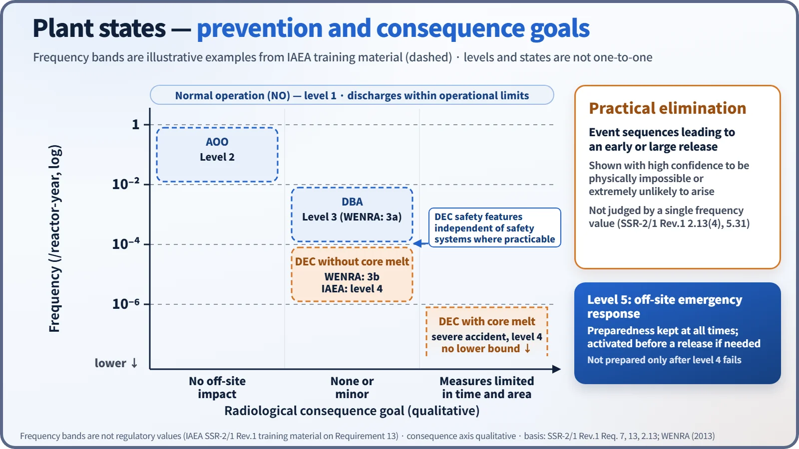
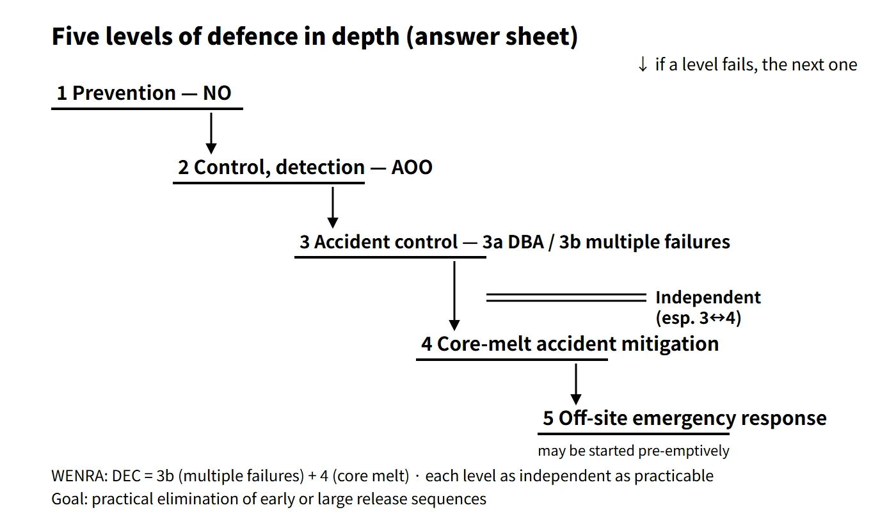

Accidents, Safety Analysis & Severe Accidents · C-SA-011
Defence in Depth — Objectives and Means of the Five Functional Levels and Independence Between Levels
Layered, independent levels of protection from prevention to off-site emergency response, and why independence between levels 3 and 4 became the key lesson of Fukushima.
Defence in depth is the basic design and operating principle of nuclear safety in which several mutually independent levels of protection are layered so that, if one level fails, the next level stops the accident from escalating and limits its radiological consequences.
IAEA SF-1 Principle 8 makes defence in depth the primary means of preventing accidents and mitigating their consequences, and SSR-2/1 Rev.1 Requirement 7 requires that "the design of a nuclear power plant shall incorporate defence in depth" and that "the levels of defence in depth shall be independent as far as is practicable". Defence in depth consists of the physical barriers (fuel pellet, cladding, reactor coolant pressure boundary, containment) and the functional levels that protect those barriers.
Principle and mechanism
The five functional levels
The five levels set out in INSAG-10 (1996) and carried over into SSR-2/1 Rev.1 (2016), para 2.13, are as follows. Each level bundles an objective, essential means, associated plant state and acceptable consequence.
| Level | Objective | Essential means | Associated plant state | Radiological consequence goal |
|---|---|---|---|---|
| 1 | Prevent abnormal operation and failures | Conservative design, high quality in construction and operation | Normal operation (NO) | No off-site impact |
| 2 | Control abnormal operation and detect failures | Control and limiting systems, surveillance features | Anticipated operational occurrences (AOO) | No off-site impact |
| 3 | Control accidents within the design basis | Protection systems, engineered safety features, accident procedures | Design basis accidents (DBA) | No or only minor off-site impact |
| 4 | Control severe plant conditions (prevent accident progression, mitigate severe accidents) | Complementary features, accident management | Design extension conditions (DEC) and severe accidents | Protective measures limited in time and area |
| 5 | Mitigate radiological consequences of large releases | Off-site emergency response | — | Off-site protective measures needed |

The logic linking the levels
The design must ensure that failures and deviations likely to occur during the plant lifetime are stopped at level 1, or at the latest at level 2, before they grow into accidents (SSR-2/1, Requirement 7). Level 3 handles design basis accidents — a single initiating event plus a single failure — with conservative analysis. The safety objective of level 4 is that even if the core melts, protective measures limited in time and area are enough, and event sequences leading to an early or a large release must be practically eliminated (para 2.13). Practical elimination means demonstrating with a high level of confidence that such a sequence is physically impossible or extremely unlikely to arise; it is not judged by a single frequency value alone. Level 5 emergency preparedness is not something prepared only after level 4 fails: it is maintained at all times and, if needed, activated early, before a release.
The plant states follow a pattern: the more frequent the state, the smaller its permitted consequences, and states with potentially large consequences must be kept extremely unlikely. IAEA training material gives illustrative ranges of more than 10⁻²/year for AOOs, 10⁻² to 10⁻⁴ for DBAs, 10⁻⁴ to 10⁻⁶ for DEC without core melt and less than 10⁻⁶ for DEC with core melt. These are explanatory examples, not prescribed boundaries.

Where 3a, 3b and DEC sit
WENRA (2013) did not create a new level; it split level 3 into 3a (single initiating events, strict rules) and 3b (multiple failure events, additional safety features, best-estimate analysis allowed). The IAEA framework includes "prevention of accident progression" in the objective of level 4, so it treats even DEC before core melt as coming after a level 3 failure. It is therefore accurate to say that DEC without core melt (DEC-A) is placed at level 3b or level 4, depending on the framework. Level 3b is not the whole of DEC-A but the postulated multiple failure events that form part of it, and it applies the same off-site consequence goal as 3a. Levels and plant states do not map one-to-one.
What it means in a plant
Independence between levels
Even with many levels, defence in depth collapses to a single layer if one common cause defeats several levels at once. The classic case is the Fukushima accident, in which the earthquake and tsunami removed both AC power and the cooling-water sources, so that equipment of levels 2 to 4 lost its function simultaneously. SSR-2/1 Rev.1 therefore stresses that safety features for DEC, especially those for mitigating fuel melt, shall be independent of the safety systems as far as is practicable. WENRA spelled this out as three pairs:
- Level 3a and 3b SSCs independent of level 1 and 2 SSCs, so that failures of normal-operation equipment do not impair safety functions.
- Level 3a SSCs independent of the additional level 3b features: unaffected 3a equipment may be credited in the 3b analysis, but 3b-only equipment is not credited in the 3a analysis.
- Level 4 complementary features independent of the SSCs of the other levels.
The adequacy of independence is demonstrated by combining deterministic and probabilistic analysis with engineering judgement, paying particular attention to shared support systems such as power, cooling and instrumentation and control. WENRA also states that for structures used across several levels, such as the containment, level-by-level independence is hard to require.
Typical equipment and measures by level (illustrative, PWR)
- Level 1: conservative design and quality assurance, negative moderator and fuel temperature coefficients.
- Level 2: reactor control systems, pressurizer pressure and level control.
- Level 3: reactor protection system, safety injection (emergency core cooling) system, auxiliary feedwater system, emergency diesel generators.
- Level 3b (DEC-A): a diverse protection system against common cause failure of the protection system; an alternate AC power source (for example, under US RG 1.155 available within 10 minutes for station blackout).
- Level 4: rapid RCS depressurization, hydrogen control (PARs, igniters), reactor cavity flooding, containment spray backup, mobile equipment, SAMGs.
- Level 5: off-site radiological emergency plan, emergency planning zones (e.g. PAZ, UPZ).
The placement of items at levels 3b and 4 is an explanatory mapping onto the WENRA/IAEA framework; it differs by design.
Operational side
Having several levels is no justification for continuing to operate with one level missing. All levels must be available at all times, and any relaxation for particular operating modes must be justified (SSR-2/1, Requirement 7). The limiting conditions for operation (LCOs) and allowed outage times of the technical specifications are how this principle is implemented in operation.
Regulatory and design criteria
| Basis | Key point |
|---|---|
| IAEA INSAG-10 (1996) | Table of objectives and essential means of the five levels |
| IAEA SF-1 (2006) Principle 8 | Primary means of preventing and mitigating accidents = defence in depth |
| IAEA SSR-2/1 Rev.1 (2016) Requirements 7 and 13, para 2.13 | Independence of levels, all levels always available, plant state categories, practical elimination of early or large release sequences |
| WENRA "Safety of new NPP designs" (2013) | 3a/3b split, independence between levels (Position 2) |
How the requirements have evolved
- From SSR-2/1 (2012 edition) to Rev.1 (2016), independence between levels 3 and 4, margins to avoid cliff-edge effects and independence at multi-unit sites were strengthened.
Easily confused pairs
| Defence in depth | Multiple barriers | Redundancy | |
|---|---|---|---|
| Nature | Overarching safety principle | Physical barriers | System design criterion |
| Unit | Five functional levels + barriers | Pellet, cladding, RCPB, containment | N trains with the same function |
| What it prevents | Occurrence, escalation and consequences of accidents as a whole | Movement of radioactive material | Loss of function from a single failure |
| Remedy for its weakness | Independence between levels | Keeping each barrier intact | Diversity against common causes |
Fire protection defence in depth applies the same way of thinking to fire. Under US 10 CFR 50.48 and RG 1.189, its three objectives are: ① prevent fires from starting; ② rapidly detect, control and extinguish fires that do occur; ③ protect safety-important equipment so that a fire not promptly extinguished does not prevent safe shutdown (fire area separation, safe shutdown capability).
Key points at a glance
- Definition: independent multi-level protection so that if one level fails, the next stops escalation and consequences (SF-1 Principle 8, SSR-2/1 Requirement 7).
- Composition: physical barriers (pellet, cladding, RCPB, containment) + five functional levels.
- Level 1: prevent abnormal operation — conservative design, high-quality construction and operation (NO).
- Level 2: control abnormal operation, detect failures — control and limiting systems, surveillance (AOO).
- Level 3: control design basis accidents — protection systems, ESFs, procedures (DBA).
- Level 4: prevent accident progression and mitigate severe accidents — complementary features, accident management (DEC, SA); early or large release sequences practically eliminated.
- Level 5: off-site emergency response — radiological emergency plan, emergency planning zones (e.g. PAZ and UPZ).
- Independence: levels as independent as practicable; DEC features in particular independent of safety systems (Fukushima lesson, WENRA 3a/3b).
